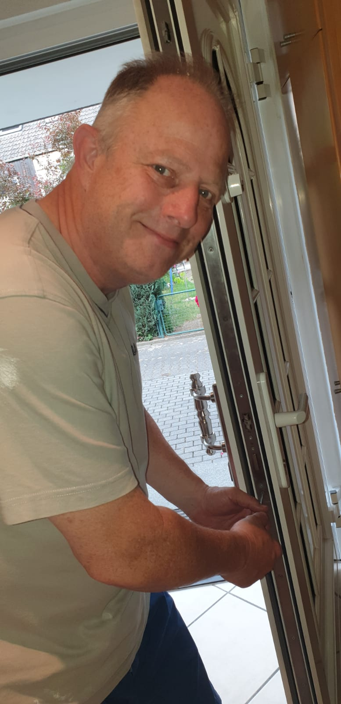

Schnell ist es passiert – die Haustür ist zu und der Schlüssel noch im Haus. A.Aber Fair ist in jeder Situation behilflich und das unkompliziert und schnell.

Er bietet Türöffnungen aller Art, angefangen von der Türöffnung bis hin zur Öffnung von Tresoren .
Dazu wird ein 24/7 Service den Kunden angeboten. Dies bedeutet, dass wir Tag und Nacht zu erreichen sind. In kürzester Zeit sind wir zur Stelle und versucht das Problem so schnellwie möglich zu lösen.
Rufen Sie für Ihre Türöffnung für Wiesbaden an:
 Die äußerste Priorität des Schlüsseldienstes ist es, alle Öffnungen so durchzuführen, dass es nicht zu Beschädigungen des Schlosses kommt. Aus diesem Grund sollte nicht selbst versucht werden, mit Gegenständen das Schloss selbst zu öffnen. Dies erschwert die Arbeit des Schlüsseldienstes und das Schloss kann beschädigt werden.
Die äußerste Priorität des Schlüsseldienstes ist es, alle Öffnungen so durchzuführen, dass es nicht zu Beschädigungen des Schlosses kommt. Aus diesem Grund sollte nicht selbst versucht werden, mit Gegenständen das Schloss selbst zu öffnen. Dies erschwert die Arbeit des Schlüsseldienstes und das Schloss kann beschädigt werden.
Selbst wenn es nicht um eine Öffnung von Türen, Toren oder Tresoren geht – der Schlüsseldienst ist ebenfalls auch behilflich bei der Schlüssel An- und Nachfertigung. Auch hier wird stets präzise und schnell gearbeitet.
Die Tresoröffnung
Auch ein Tresor sollte von einem Fachmann geöffnet werden. Immer wieder kommt es vor, dass sich ein Tresor nicht mehr öffnen. Kunden kommen an wichtige Dokumente oder Bargeld nicht mehr heran.
Auch hier reagiert A.Aber Fair schnell und zuverlässig im 24-Stunden-Dienst. Dieser öffnet den betreffenden Tresor, wenn möglich, ohne Beschädigungen. Auf diese Weise kann nach der Öffnung dieser Tresor weiter verwendet werden.